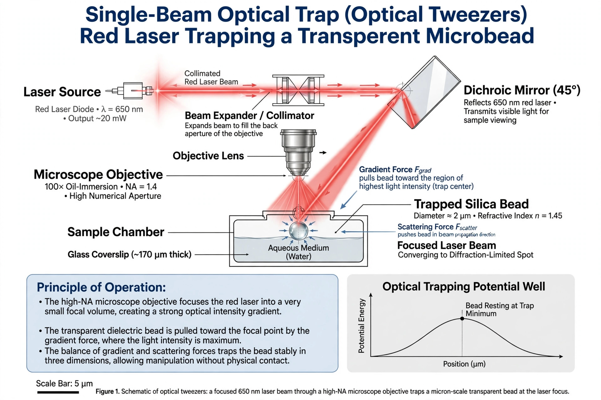

Optical tweezers
Optical tweezers (originally called single-beam gradient force traps) are scientific instruments that use a highly focused laser beam to hold and manipulate microscopic and sub-microscopic objects, such as dielectric particles, atoms, and living cells, in three dimensions. The technique exploits radiation pressure and gradient forces: light refracted through a transparent particle transfers momentum, and the particle is drawn toward the region of highest light intensity at the focus of the beam.

History
The foundations were laid at Bell Laboratories by Arthur Ashkin, who showed in 1970 that laser light could accelerate and trap micrometer-sized particles, and in 1986 demonstrated the single-beam gradient force trap — the optical tweezer proper. Ashkin and colleagues soon applied the trap to viruses, bacteria and living cells without damaging them, using infrared wavelengths that biological material absorbs only weakly. Ashkin received one half of the 2018 Nobel Prize in Physics "for the optical tweezers and their application to biological systems".
Principle
Two force components act on a small dielectric sphere in a focused beam. The scattering force pushes the particle along the direction of light propagation, while the gradient force pulls it toward the focal point where intensity is greatest. With a tightly focused beam through a high-numerical-aperture microscope objective, the axial gradient force can exceed the scattering force, producing a stable three-dimensional trap. Trap stiffness can be calibrated so the device doubles as an exquisitely sensitive force transducer, measuring forces from hundreds of piconewtons down to fractions of a piconewton.
Applications
Optical tweezers have become a central tool of single-molecule biophysics. Researchers attach microscopic beads to individual molecules and use the trap to measure the forces and step sizes of molecular motors such as kinesin and myosin, to stretch and unzip DNA and RNA, and to probe the folding of proteins. Variants include holographic tweezers, which shape a laser into many traps at once to assemble microstructures, and optical traps for neutral atoms used in quantum optics and cold-atom physics.
See also: Arthur Ashkin · Radiation pressure · Laser